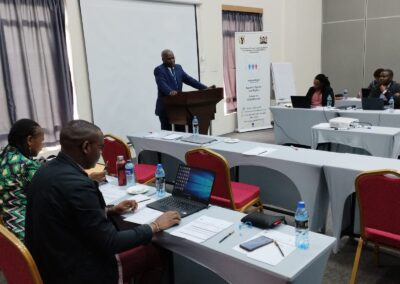
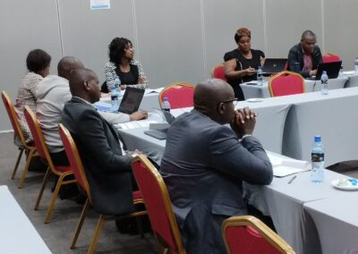

Embracing Diversity: The Intersection of Law and Society

A Milestone in Legal Reform: The Intersex Persons Bill, 2023
The "Revised Intersex Persons Bill, 2023" marks a revolutionary step in the legal recognition and protection of intersex persons in Kenya. This comprehensive legislation aims to safeguard the rights of intersex individuals, ensuring their inclusion and equality in various societal aspects, from healthcare and education to employment and legal identity. Its enactment represents not just a legal triumph but a profound societal shift towards inclusivity and understanding.
Key Provisions of the Bill
The bill introduces several critical measures, including the amendment of official documentation, ensuring intersex individuals can reflect their true identity on legal papers. It emphasizes the prohibition of harmful practices targeting intersex persons, advocating for their right to live without discrimination and stigma. Education, health, employment, and access to justice are other focal areas, indicating a holistic approach to intersex rights.
Building Bridges: The Impact of the IPICC Workshop
Complementing these legislative advancements, the "Program for Validation Workshop IPICC" played a crucial role in uniting diverse stakeholders to discuss and validate the bill. This workshop served as a key platform for dialogue, education, and collaboration. 
Cultivating Understanding and Collaboration
The workshop's agenda was thoughtfully crafted to cover a broad spectrum of topics related to intersex rights. Sessions on understanding intersexuality, legal frameworks, and the importance of sensitizing society about intersex issues were included. Involving government officials, legal experts, healthcare professionals, and intersex community representatives, the workshop aimed to create a shared understanding and foster a supportive environment for the bill's implementation.
Looking Back: Outcomes and Challenges
Realizing Change
While the bill and the workshop represented substantial progress, their success rested on effective implementation. This necessitated ongoing education, societal sensitization, and the dismantling of long-standing biases and misconceptions. The workshop's outcomes and the bill's provisions needed to become concrete actions and policies that truly improved the lives of intersex individuals.
Addressing Challenges
Realizing this change was not without its challenges. It required a concerted effort from all sectors of society to overcome cultural, social, and institutional barriers. Continuous advocacy, policymaking, and community engagement were essential to ensure that the rights and needs of intersex persons were not only recognized but also respected and fulfilled.
Conclusion: Embracing a Journey of Inclusivity and Equality
The "Revised Intersex Persons Bill, 2023" and the "Program for Validation Workshop IPICC" were more than legal and educational initiatives. They were symbols of hope for a more inclusive society, where diversity was not only accepted but celebrated. As Kenya embarked on this journey, it set a precedent for other nations, paving the way for a world where every individual, irrespective of their sex characteristics, is valued and empowered.